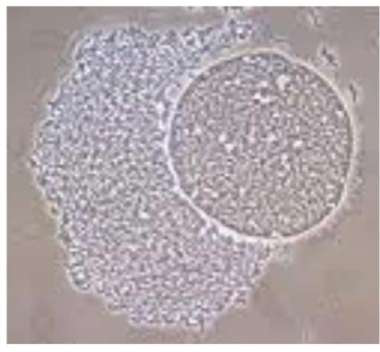
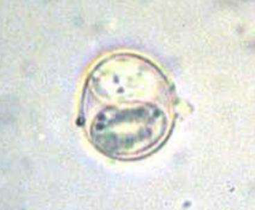
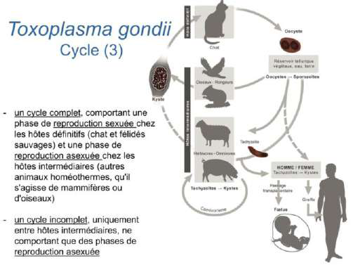
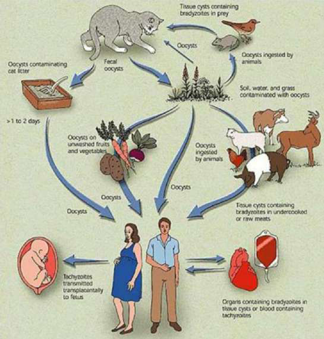
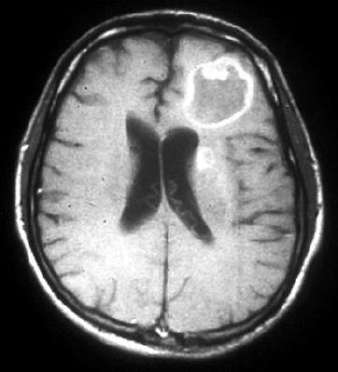
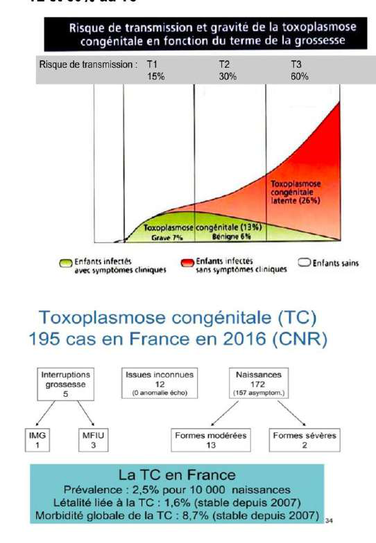
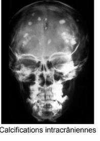
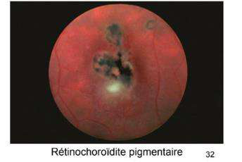
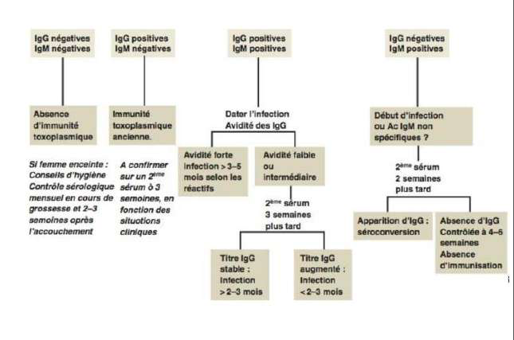

D'après le cours Pr. Sophie Brun (Roneo3, cours 7 — DFGSM3, 12 juin 2026). Pivots : point-clé / piège · diagnostic · prévention / traitement · seuil / chiffre-clé. Figures du cours intégrées.
📌 L'homme est une impasse parasitaire : il n'est mangé par personne → interrompt la chaîne de transmission.
📌 Position taxonomique : Coccidies (comme Cryptosporidium, Isospora, Cyclospora) au sein des Apicomplexa. Les Hémosporidies (Plasmodium, Babesia) sont un autre groupe de ce phylum.
2 · Les 3 formes parasitaires
Forme
Autre nom
Morphologie
Localisation
Résistance
Contamination
Tachyzoïte
Forme végétative (FV) / trophozoïte
Forme arquée « en virgule » — extrémité postérieure arrondie (noyau) + extrémité effilée apicale
Multiplication asexuée intracellulaire dans presque toutes les cellules (phagocytes mononucléés ++)
Détruit par les sucs digestifs → non contaminant par ingestion
Voie sanguine (transfusion) ou transplacentaire
Kyste (bradyzoïtes)
Bradyzoïtes = tachyzoïtes quiescents
50–200 µm, membrane épaisse résistante, jusqu'à 3000 bradyzoïtes
Tissus pauvres en Ac : cerveau (neurones, astrocytes), rétine, muscles
Persistance à vie. Inaccessibles au SI et aux traitements. Détruits par chaleur et congélation
Ingestion de viande crue/insuffisamment cuite contenant des kystes
Oocyste
Éosiste
Contient 2 sporocystes × 4 sporozoïtes
Éliminé dans selles du chat (HD) quelques semaines après 1ère infection
Non immédiatement contaminant — maturation 2-3 j dans le milieu extérieur. Très résistant dans la nature.
Péril fécal : végétaux/fruits mal lavés souillés par déjections de chat
Tachyzoïtes (formes végétatives) dans la moelle osseuse — microscopie optique. Les tachyzoïtes sont visibles en intracellulaire, témoins d'une multiplication active lors d'une phase de parasitémie.

Kyste tissulaire de T. gondii (microscopie). Membrane épaisse résistante contenant des centaines de bradyzoïtes. Persiste toute la vie dans les tissus nerveux et musculaires.

Oocyste sporulé de T. gondii (microscopie). Forme infectieuse éliminée dans les selles du chat après maturation de 2-3 jours dans l'environnement.
3 · Cycle biologique
Cycle chez l'hôte définitif (chat)
Le chat s'infecte en chassant (ingestion d'une proie HI contenant des kystes)
Cycle sexué dans l'épithélium digestif du chat → élimination d'oocystes dans les selles
Chat de ville (ne chasse pas) = très faible risque. Chat de campagne = risque accru.
Étapes du cycle complet
Oocystes éliminés dans les déjections du chat (HD)
Sporulation en 2-3 j dans le milieu extérieur → sporozoïtes
Ingestion des sporozoïtes par un HI (homme, mouton, cochon…)
Formation de kystes chez l'HI (cerveau, muscles, rétine)
Ingestion de viande crue/peu cuite d'un HI par l'HD (chat)
Contamination de l'HD + multiplication sexuée chez HD
Élimination de nouveaux oocystes par l'HD → retour à l'étape 1

Cycle biologique de Toxoplasma gondii (diagramme de cours). Cycle complet chez le félidé (HD) + hôtes intermédiaires. Flèches de contamination humaine : viande crue (kystes), oocystes du chat, voie transplacentaire.

Cycle Toxoplasma gondii — schéma général. Le cycle complet nécessite un félidé (HD) pour la reproduction sexuée. Le cycle incomplet (entre HI uniquement) n'implique que la reproduction asexuée.
Modes de contamination humaine
Voie
Mécanisme
Remarques
1. Ingestion de kystes 🥩
Viande crue ou mal cuite (mouton ++ en France) ou non congelée. Kyste → libération bradyzoïtes → traversée muqueuse intestinale → parasitémie transitoire → formation de nouveaux kystes (SNC, œil, muscles)
Voie principale en France
2. Ingestion d'oocystes 🥗
Légumes/fruits crus mal lavés, mains souillées par la terre ou la litière, caresses sur le pelage d'un chat porteur
Pays à hygiène précaire ++
3. Voie transplacentaire 🤰
Primo-infection chez la femme enceinte → parasitémie de quelques semaines → passage du placenta via le cordon ombilical
Tachyzoïtes (forme circulante)
4. Exceptionnelles
Greffe d'organe (cœur riche en kystes), transfusion sanguine (tachyzoïtes)
Rares mais surveillance sérologique greffé
4 · Épidémiologie
Parasitose cosmopolite
En France : 200 000 à 300 000 nouvelles infections/an dont ~2 700 chez femmes enceintes
Séroprévalence passée de 60 % à < 30 % en 30 ans → généralisation de la congélation industrielle de la viande (détruit les kystes)
Prévalence augmente avec l'âge (↑ consommation viande)
Europe du Nord : séroprévalence < 25 % (congélation encore plus systématique)
Asie de l'Est / Japon : < 10 % (faible consommation de viande)
📌 La baisse de la séroprévalence en France est directement liée à la congélation industrielle de la viande, non à des changements de comportement.
Mécanisme : tachyzoïtes circulants (dans le sang) → détection par PCR sang
⚠️ Les lésions « en cocarde » à l'IRM sont des zones de nécrose, pas des kystes. Les kystes sont uniquement dans les tissus musculaires/nerveux sains.
📌 Y penser chez ID devant céphalées + petit fébricule → sérologie + ponction lombaire.

IRM cérébrale — toxoplasmose cérébrale chez un patient immunodéprimé (VIH). Lésion unique « en cocarde » (zone de prise de contraste annulaire entourant un centre nécrotique). Ce ne sont pas des kystes mais des zones de nécrose parasitaire.
7 · Toxoplasmose congénitale
~200 cas/an en France (prévalence 2,5 pour 10 000 naissances)
Contexte : primo-infection pendant la grossesse OU femme immunodéprimée (réactivation)
Aucun risque si infection bien antérieure à la grossesse (ni en péri-conceptionnel)
Risque global de transmission : ~30 %
Dans 90 % des cas : forme latente (diagnostic uniquement sérologique)
Manifestations de la forme symptomatique
Choriorétinite
Calcifications intracrâniennes
Retard psychomoteur, convulsions
Risque de transmission et gravité selon le trimestre
Trimestre
Risque de transmission
Gravité si infecté
T1 (1er trimestre)
~15 %
Élevée (fœtus peu vascularisé → passage rare mais très grave : fausse couche, forme sévère)
T2 (2ème trimestre)
~30 %
Intermédiaire
T3 (3ème trimestre)
~60 %
Moins grave (fœtus mature + système immunitaire plus développé → formes latentes)
📌 Principe inverse : transmission ↑ avec l'avancement de la grossesse (fœtus plus vascularisé), mais gravité ↓ avec l'avancement (fœtus plus mature).

Risque de transmission et gravité de la toxoplasmose congénitale selon le terme de la grossesse (T1 : 15 %, T2 : 30 %, T3 : 60 %). En bas : épidémiologie France CNR — 195 cas en 2016.

Calcifications intracrâniennes (radiographie crânio-faciale) — complication de la toxoplasmose congénitale. Points radio-opaques disséminés dans le parenchyme cérébral.

Rétinochoroïdite pigmentaire — fond d'œil. Lésion cicatricielle pigmentée, complication de la toxoplasmose congénitale ou de la réactivation chez l'IC.
Partie 3 — Diagnostic biologique & prévention
8 · Sérologie (IgG / IgM / test d'avidité)
⚠️ Absence de standardisation des réactifs : toute comparaison inter-laboratoires est IMPOSSIBLE. Les 2 analyses DOIVENT être faites dans le même labo avec la même technique.
Cinétique des anticorps
Anticorps
Apparition
Pic
Persistance
IgM
~1 semaine post-infection
1–2 mois
Jusqu'à 2 ans (ne signifie pas infection récente seul)
IgG
~3–4 semaines post-infection
~2 mois
Toute la vie → immunité protectrice
Interprétation sérologique
IgG
IgM
Interprétation
−
−
Absence d'immunité → surveillance mensuelle si femme enceinte
+
−
Immunité toxoplasmique ancienne — pas de risque fœtal
+
+
Dater l'infection → test d'avidité des IgG obligatoire chez la femme enceinte
−
+
Début d'infection OU Ac IgM non spécifiques → 2ème sérum 2 semaines plus tard
Avidité faible → 2ème sérum 3 semaines plus tard :
IgG stables → infection datant de 2–3 mois
IgG augmentées → infection < 2–3 mois (récente)
📌 Séroconversion = passage d'un test IgG négatif à positif = preuve d'infection récente.
📌 L'avidité maximale est atteinte vers 4 mois, indépendamment du taux d'IgG (pic à 2 mois).

Algorithme décisionnel de la sérologie toxoplasmique (cours). Les 4 situations clinico-sérologiques et leur prise en charge : absence d'immunité, immunité ancienne, IgG+/IgM+ (test d'avidité), IgG−/IgM+ (2ème sérum). À mémoriser pour la gestion de la femme enceinte séronégative.
9 · Diagnostic parasitaire
Indication : séroconversion pendant la grossesse → diagnostic prénatal
PCR sur liquide amniotique (ponction à partir de 18 SA)
Si ADN de Toxoplasma détecté → traitement de la mère
Chez l'ID : PCR sang (tachyzoïtes circulants)
📌 La ponction de liquide amniotique est invasive mais nécessaire si séroconversion confirmée — pas d'alternative.
10 · Prévention & législation
Obligations légales en France
Sérologie obligatoire à la déclaration de grossesse
Si IgG négatives : contrôle mensuel jusqu'à l'accouchement + 3 semaines après
Si séroconversion pendant la grossesse : traitement + échographie fœtale mensuelle + PCR liquide amniotique
Si enfant contaminé in utero : surveillance clinique jusqu'à l'adolescence + traitement ≥ 1 an
Chez les ID : sérologie initiale donneurs et receveurs de greffe
Conseils d'hygiène pour les femmes enceintes séronégatives
Mesure
Justification
Cuire la viande à cœur ou congeler ≥ 3 j à −20°C
Détruire les kystes (le fumage ne suffit pas)
Laver fruits et légumes à grande eau
Éliminer les oocystes
Gants pour jardinage et nettoyage litière
Éviter contact oocystes
Éviter crudités au restaurant
Lavage non contrôlé
Ne pas se séparer du chat (surtout chat de ville)
Inutile si le chat ne chasse pas — déléguer le nettoyage de la litière
Partie 4 — Coccidioses digestives & Microsporidies
📌 Par manque de temps lors du cours, la Prof. Brun n'a traité que Cryptosporidies et Microsporidies — le contenu ci-dessous est issu de la RT complète (base : RT de l'an dernier).
Caractères communs des coccidies/microsporidies
Appartiennent aux Apicomplexa (sauf Microsporidies = Champignons)
Épidémies d'origine alimentaire ou hydrique
Découverte « récente » (contexte SIDA)
Opportuniste si ID — peuvent être graves / fatales ; souvent bénins et résolutifs chez IC
Cycle entérocytaire intracellulaire
Élimination d'oocystes ou spores dans le milieu extérieur
Enterocytozoon bieneusi +++ (1985, premier chez sidéen, dans les entérocytes) + Encephalitozoon intestinalis (entérocytes, arbre urinaire et respiratoire)
Terrain
Opportunistes stricts : SIDA ++++ si CD4 < 500/mm³. Cosmopolites
Morphologie
Spore ovoïde, 1–3 µm. Tube polaire + disque d'ancrage → se fixe aux entérocytes, injecte le matériel nucléaire parasité
Cycle
Schizogonique + sporogonique dans les cellules épithéliales. Formation de spores (résistance, dissémination, contamination via selles/urines)
Transmission
Indirecte par les spores (eau et aliments souillés) + interhumaine directe probable
Clinique
Diarrhées chroniques redoutables chez l'ID
Diagnostic
Mise en évidence des spores dans les selles (EPS) par colorations spécifiques + PCR temps réel (identification de l'espèce)